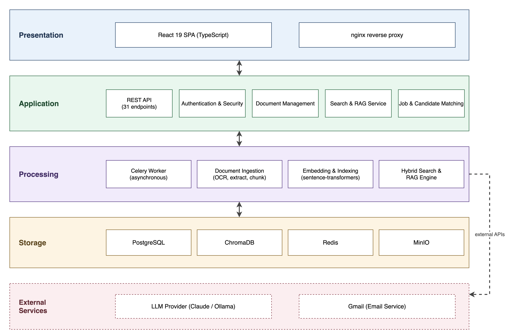

Supervision
Supervisor: Ms. Hirra Mustafa
Co-Supervisor: Dr. Mazhar Iqbal
Hireflow is a self-hostable, AI-powered HR screening and document-retrieval platform built on Retrieval-Augmented Generation (RAG).
It lets HR teams ingest heterogeneous documents, search and question them in plain language, and automatically screen and rank candidates against job criteria, with every answer traceable to its source. Key objectives:
Organisations accumulate large volumes of unstructured documents, and HR teams spend the majority of their time manually reviewing resumes, on average around 23 hours to fill a single position.
Keyword search matches literal tokens rather than meaning, so a query for “machine learning engineer” misses a strong candidate who wrote “ML researcher”. Hireflow replaces manual review and rigid keyword filters with semantic retrieval and grounded question-answering, unifying document intake, search, and candidate screening in one coherent platform.
Two pipelines drive the system.
Ingestion (asynchronous, on a Celery worker): each document is extracted, classified, chunked, contextualised, embedded with the bge-small-en-v1.5 model, and indexed into ChromaDB. Text and metadata are stored in PostgreSQL and the original files in MinIO.
Retrieval and RAG (per request): the query is parsed and normalised; vector, lexical (tsvector), metadata, and fuzzy retrieval then run and are combined by Reciprocal-Rank Fusion. An intent-aware prompt is composed and a source-cited answer is streamed from Claude.
The backend is a strictly layered FastAPI application (API, Service, Domain, and Adapter layers) with Protocol-based, swappable providers, so business rules stay testable and infrastructure remains replaceable. The frontend is a React 19 single-page application.

Hireflow meets its four objectives: document management, natural-language search, transparent resume screening, and automated intake, in one coherent, self-hostable system. Every generated answer is source-attributed, and out-of-scope questions are refused rather than hallucinated.
Future work includes login rate-limiting, refresh-token revocation on password change, and horizontal scaling of the worker pool.